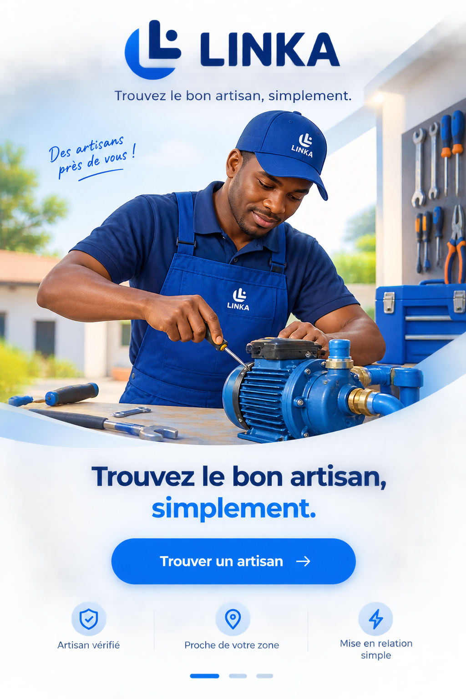

Votre besoin.
Le bon artisan.
Décrivez ce dont vous avez besoin. LINKA vous aide à trouver un artisan vérifié qui intervient dans votre zone.

vérifiés
zone
simple
Décrivez votre besoin
Écrivez ou dictez votre demande avec vos propres mots.
Indiquez votre zone
Aucun GPS n’est nécessaire : vous choisissez la zone vous-même.
Nous cherchons pour vous
Les artisans sont contactés progressivement, un à la fois.
Comment fonctionne LINKA ?
Vous décrivez votre besoin. Nous vous aidons à trouver un professionnel adapté à votre demande et à votre zone.
Décrivez ce qu’il vous faut
Par écrit ou par la voix, sans vocabulaire technique compliqué.
Précisez votre localisation
Ville, quartier, secteur ou repère. Aucun accès au GPS n’est nécessaire.
LINKA recherche un artisan
Les professionnels vérifiés compatibles sont examinés par proximité et disponibilité.
Vous êtes mis en relation
Lorsqu’un artisan accepte, vous pourrez le contacter directement.
De quoi avez-vous besoin ?
Expliquez simplement le problème, comme vous le diriez à quelqu’un.
La dictée dépend de la compatibilité de votre navigateur et de l’autorisation du micro.
Où faut-il intervenir ?
Indiquez l’endroit où l’artisan doit se rendre. Une localisation précise aide à améliorer la recherche.
LINKA ne demande pas l’accès à votre GPS. Vous indiquez vous-même la zone de l’intervention.
Votre demande a bien été reçue.
Nous recherchons un artisan vérifié correspondant à votre besoin et à votre zone.
Prototype : aucune demande réelle n’est envoyée pour le moment.
Nous cherchons le bon artisan.
Les professionnels compatibles sont examinés progressivement. Un artisan est contacté à la fois.
Le moteur de recherche réel sera connecté ultérieurement.
Un artisan correspondant !
Voici à quoi pourra ressembler une fiche lorsque le service sera connecté.
Réparateur de pompe
✓ Identité vérifiéeNom, distance et informations fictifs, uniquement pour illustrer le futur résultat.
Gardez le fil de votre demande.
Retrouvez ici les grandes étapes de votre mise en relation.
Les statuts ne sont pas encore synchronisés avec un serveur.
L’intervention est-elle terminée ?
Votre réponse permet de garder un suivi fiable des mises en relation.
Comment s’est passée l’intervention ?
Votre avis aidera LINKA à améliorer la confiance et le suivi.